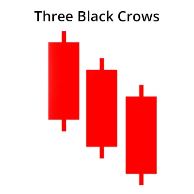

थ्री क्रोज़ पैटर्न एक मल्टीपल कैंडलस्टिक चार्ट पैटर्न है जो डाउनट्रेंड के पलटवार की पूर्वभासित करने के लिए उपयोग किया जाता है।
यह कैंडलस्टिक पैटर्न उत्पन्न होता है जब बियरिश फोर्सेज कार्रवाई में आते हैं और कीमतों को तीन लगातार दिनों तक गिराते हैं।
ट्रेडर इस बियरिश कैंडलस्टिक पैटर्न के उत्पन्न होने के बाद शॉर्ट पोजीशन ले सकते हैं।
ट्रेडर व्यूम और तकनीकी संकेतकों की मदद से इस कैंडलस्टिक पैटर्न के उत्पन्न होने की पुष्टि कर सकते हैं।
| Formation of Three Black Crows: |
| How to trade with this Three Black Crows Pattern ? |
1st Candle:
इस पैटर्न की पहली कैंडलस्टिक एक लंबी बियरिश कैंडलस्टिक होनी चाहिए और यह चल रही उद्देश्यवाद का आगमन होना चाहिए।
एक बियरिश कैंडल का मतलब है कि बंद करने की कीमत खुलने से कम होनी चाहिए क्योंकि भालू की कोशिश होती है कि मूल्यों को गिराने का प्रयास करें।
2nd Candle:
दूसरी कैंडल भी एक बियरिश कैंडल होनी चाहिए। यह लंबी या छोटी बियरिश कैंडल हो सकती है।
इस कैंडल की खुलने की कीमत पहली कैंडल के वास्तविक शरीर में होनी चाहिए अर्थात पहली कैंडल के मध्यांतर या बंद के बीच।
दूसरी कैंडल पहली कैंडल की उच्चतम कीमत को तोड़ नहीं सकती है।
3rd Candle:
इस पैटर्न का तीसरा कैंडलस्टिक भी एक बियरिश कैंडलस्टिक होना चाहिए। यह लंबा या छोटे शरीर वाला कैंडलस्टिक हो सकता है।
इस कैंडलस्टिक की ओपनिंग प्राइस पहले कैंडलस्टिक के रियल बॉडी में होनी चाहिए, यानी पहले कैंडल के मध्य या क्लोजिंग से बीच में होनी चाहिए।
तीसरा कैंडल दूसरे कैंडल के हाई को नहीं तोड़ना चाहिए।
ध्यान रखें कि ये तीन कैंडलस्टिक बियरिश मारुबोजू भी हो सकते हैं।
बियरिश मारुबोजू कैंडलस्टिक पैटर्न एक लंबे शरीर वाला बियरिश कैंडलस्टिक होता है जिसमें क्लोजिंग प्राइस वह निम्नतम प्राइस होता है जो उस दिन के लिए हाई प्राइस होता है। बियरिश मारुबोजू में कोई छाया नहीं होती।
| Example: |
नीचे फिलिप्स कार्बन ब्लैक लिमिटेड के दैनिक चार्ट का एक उदाहरण है जो हमें दिखाता है कि एक उच्चतम से नीचे तरण के बाद Three Black Crows कैंडलस्टिक पैटर्न कैसे बनता है और कैंडलस्टिक पैटर्न के बाद ट्रेंड उलट दिशा में बदल जाता है।
| Key Points: |